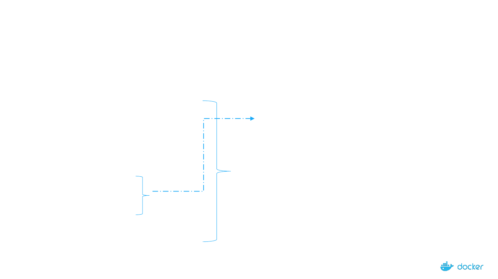
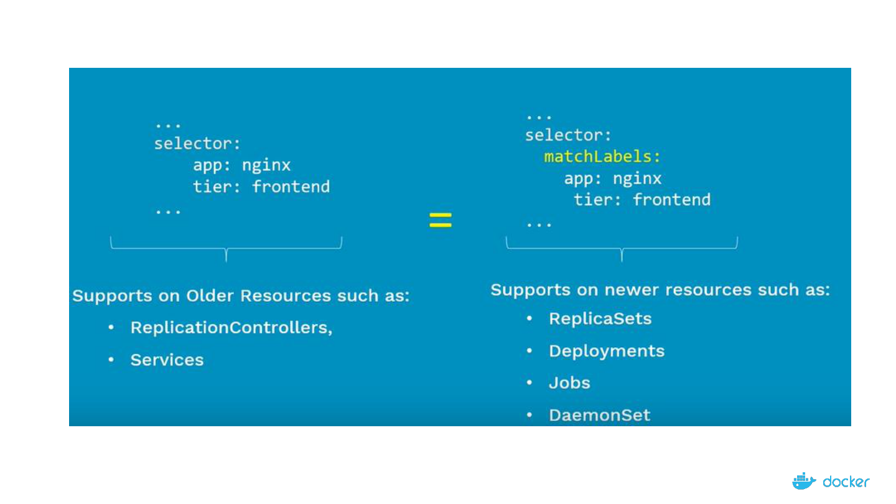
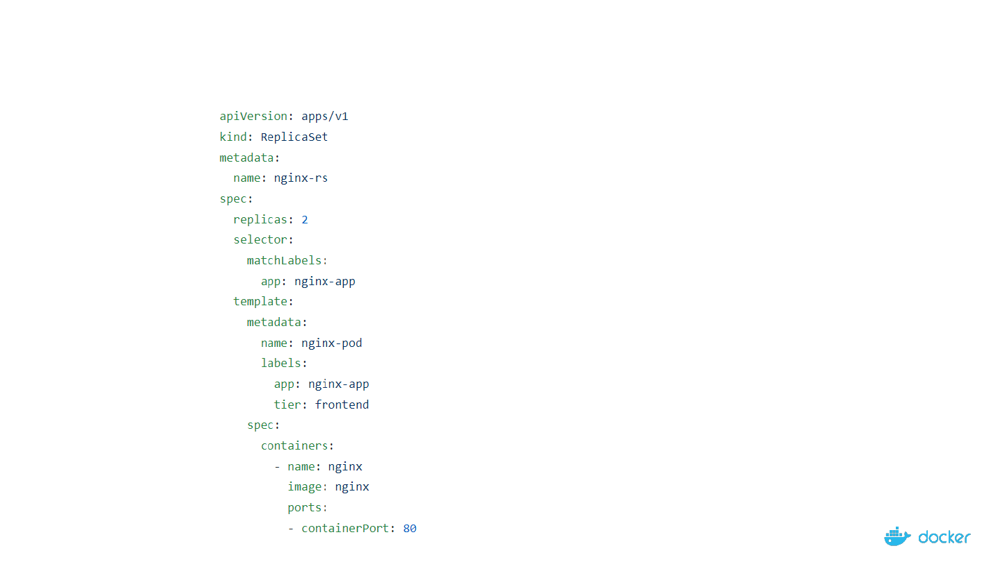
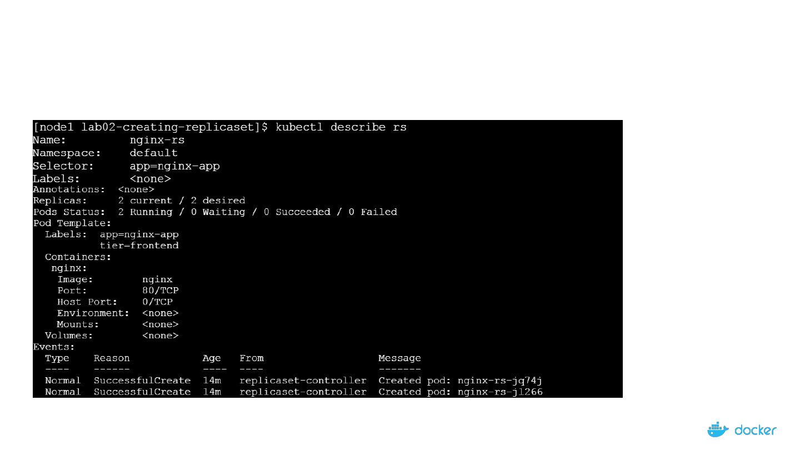

Demystifying
the Nuts & Bolts of
Kubernetes
Architecture
ReplicaSet101
How can you ensure that there are 3 Pods instances which
are always available and running at one point in time?
What is ReplicaSet all about?
Maintain a stable set of replica Pods running at any given time
- Ensures that a specified number of Pods are running at any time
a. If there are access Pods, they get killed and vice versa
b. New Pods are launched when they get failed, get deleted and terminated
- ReplicaSet & Pods are associated with “labels”

Replication Controller Vs ReplicaSet
- ReplicaSet is the next generation of Replication Controller
- Both serve the same purpose
ReplicaSet Replication Controller
Set-based Selectors
Equality-based Selectors

Labels & Selectors
When Pods are scaled, how are these Pods Managed at such large scale?
Pods
Controllers & Services
Labels
Selectors
#Pod-Spec
apiVersion: v1
kind: pod
metadata:
name: nginx-Pod
labels:
app: guestbook
tier: frontend
env: dev
spec:
replicas: 5..

6
Equality-based Selectors Set-based Selectors
Operators:
= and ==
Examples:
environment = production
tier! = frontend
Commandline:
$kubectl get pods -l environment=production
In Manifest:
..
selector:
environment: production
tier: frontend
..
Operators:
in notin exists
Examples:
environment in (production, qa)
tier notin(frontend, backend)
Commandline:
$kubectl get pods -l `enviornment in(production)
In Manifest:
..
selector:
matchExpressions:
- {key:environment,operator:in,values:[prod,qa]}
- {key:tier,operator:Notin,values:[frontend,backend]}
..
Supports: Services, Replication Controller
Supports: Job, Deployment, ReplicaSet, DaemonSet

7

8
ReplicaSet Examples:
Manifest file
Deploy app using RS
Display and validate RS
Test – Node Fails
Test – Scale Up
Test – Scale Down

9
ReplicaSet Manifest File

10
A Typical Replicaset Workflow
Credits” Viktor Farcic

11
Creating Nginx-rs Pods
$kubectl create –f nginx-rs.yaml

12
Checking the state of ReplicaSet

13
Scaling the Nginx Service


16
Thank You